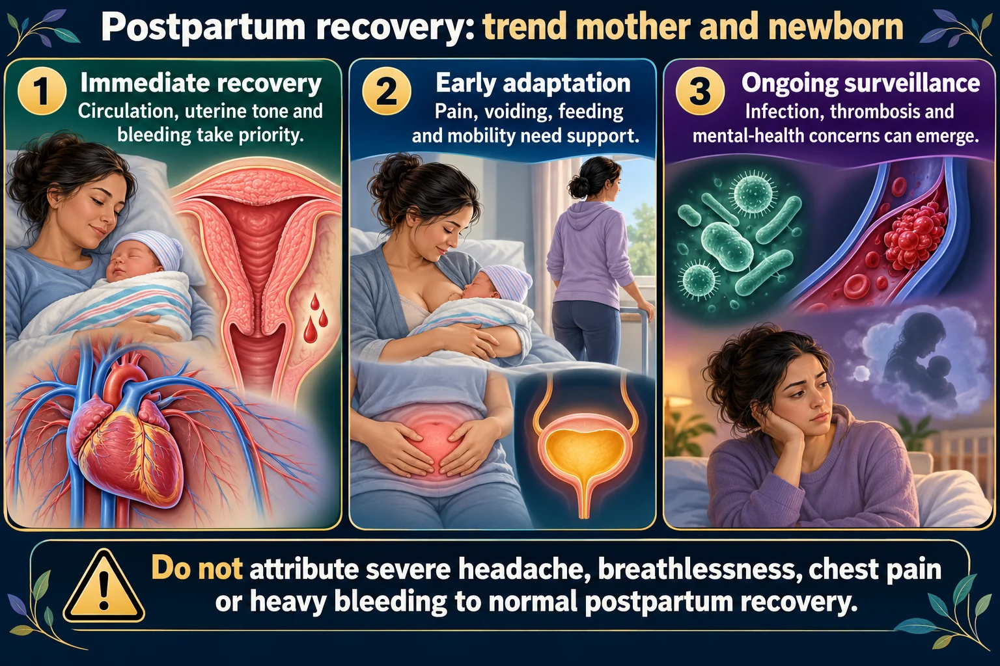

BUBBLE-HE, what each letter is actually looking for, and the three postpartum mood disorders that are not the same thing.

Firm, midline, and one centimeter lower each day. Boggy, deviated or stalled each mean something different.
Do not attribute severe headache, breathlessness, chest pain or heavy bleeding to normal postpartum recovery.
Immediate recovery
Circulation, uterine tone and bleeding take priority.
Early adaptation
Pain, voiding, feeding and mobility need support.
Ongoing surveillance
Infection, thrombosis and mental-health concerns can emerge.
Fundus and lochia
Assess tone, position, amount and character; heavy or increasing bleeding is concerning.
Comfort and function
Review perineum/incision, bladder, bowel, breasts and mobility.
Teaching
Explain urgent warning signs, follow-up and available support.
| Letter | Assess | Normal |
|---|---|---|
| Breasts | Soft, filling, engorged; nipples intact | Milk in day 3–5 |
| Uterus | Firm, midline, descending | ~1 cm lower per day |
| Bladder | Emptying fully; not distended | Void within 6–8 h |
| Bowels | Sounds, first movement, flatus | BM in 2–3 days |
| Lochia | Amount, color, clots, odor | Rubra → serosa → alba |
| Episiotomy | REEDA | Mild edema, no discharge |
| Homans / legs | Calf pain, warmth, swelling | DVT risk is raised |
| Emotional | Mood, bonding, support | Some tearfulness normal |
REEDA = Redness, Edema, Ecchymosis, Discharge, Approximation.
Immediately after birth it should be firm, midline, at or just below the umbilicus.
Always support the lower uterine segment with one hand while massaging with the other, or you risk inverting the uterus.
| Complication | Recognize by | Key point |
|---|---|---|
| Hemorrhage | Boggy uterus, saturating a pad in <1 h | Massage first; pulse rises before BP falls |
| Endometritis | Fever after 24 h, foul lochia, uterine tenderness | Antibiotics; a fever in the first 24 h is often dehydration |
| UTI | Frequency, burning, suprapubic pain | Catheterization in labor raises risk |
| Mastitis | Red wedge on one breast, flu-like, fever | Keep breastfeeding + antibiotics |
| DVT / PE | Unilateral calf pain and swelling; sudden dyspnea and chest pain | Pregnancy is a hypercoagulable state |
| Hematoma | Severe perineal pain with a firm uterus and little visible bleeding | Bulging bluish mass; report |
Homans sign is no longer recommended as a DVT test - it can dislodge a clot. Assess for unilateral pain, warmth, swelling and redness instead.
Severe perineal pain with a firm uterus is a hematoma, not normal soreness. That distinction is a favorite question.
| Baby blues | Postpartum depression | Postpartum psychosis | |
|---|---|---|---|
| Onset | Days 3–5 | Weeks to months | Usually first 2 weeks |
| Duration | Up to 2 weeks | Months if untreated | Emergency |
| Picture | Tearful, mood swings, still functioning | Hopeless, guilty, cannot function, may not bond | Hallucinations, delusions, thoughts of harming self or baby |
| Treatment | Support, reassurance, rest | Therapy, medication, screening | Psychiatric emergency, hospitalization |
Postpartum psychosis is a psychiatric emergency. The infant must not be left alone with her, and she needs immediate psychiatric care.
Ask directly about thoughts of harming herself or the baby. Asking does not plant the idea, and it is the only way to find out.
Baby blues is normal and self-limiting. The distinguishing question is always duration and function: still coping and improving by two weeks = blues; worsening or unable to function = depression.
These newly drawn concept diagrams consolidate the retired illustration sets. The accompanying study notes and original handout links remain on this page.